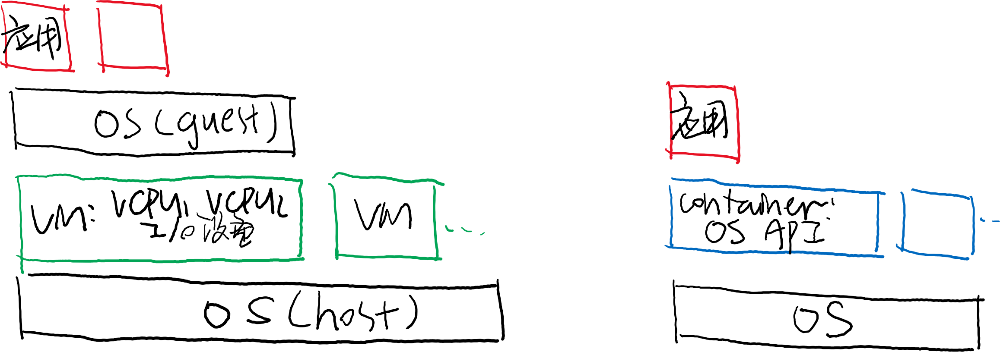
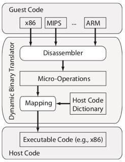
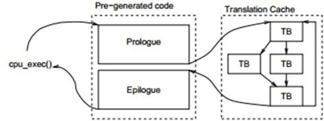
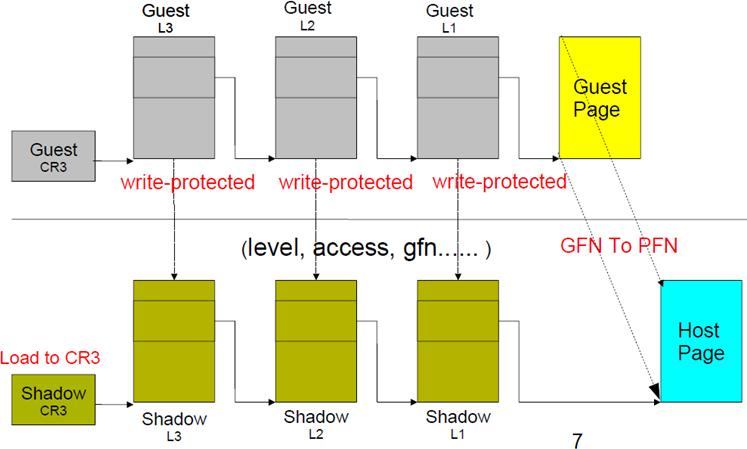
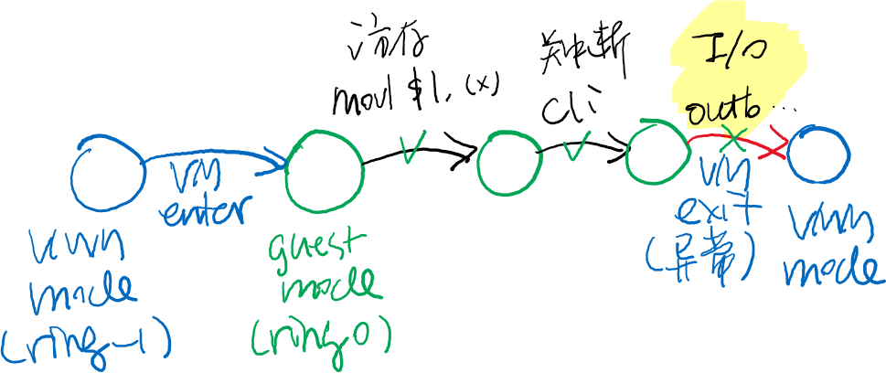
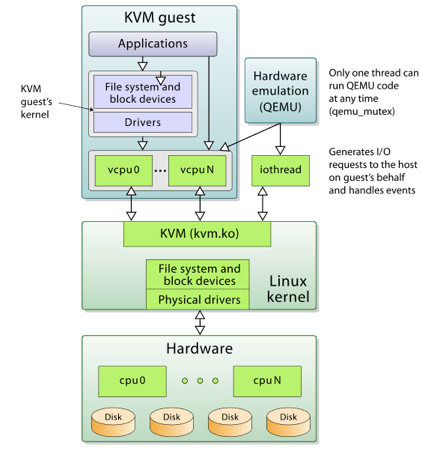
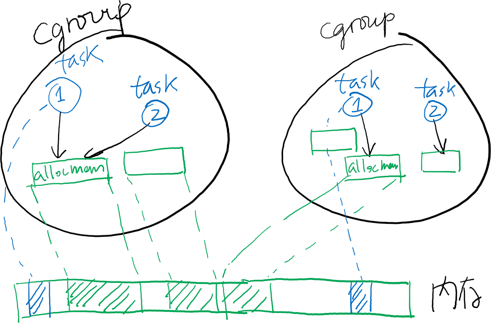
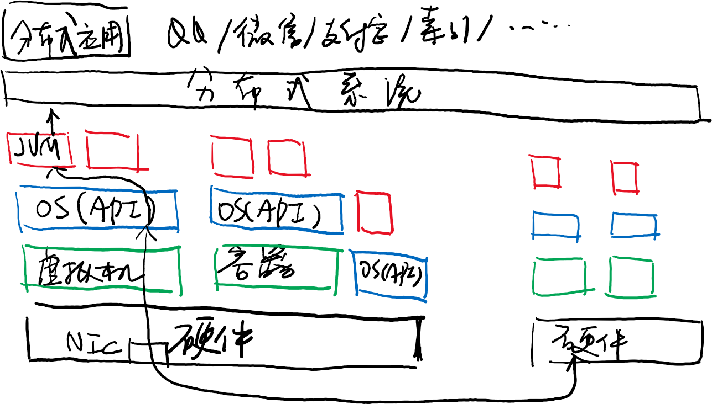

public: True class: center, middle # 容器与虚拟机 蒋炎岩 <jyy@nju.edu.cn> 南京大学计算机软件研究所 --- # 本讲概述 > 既然可以在一份计算机硬件上运行多个.red[进程]，为什么不能运行多个.red[操作系统]？ > > - 操作系统也是个C程序啊！ > - 只要提供正确的运行环境，操作系统也可以虚拟化 ---- * 操作系统虚拟化 * 虚拟机与容器 --- class: center, middle # 操作系统虚拟化 --- # 操作系统虚拟化 为什么要在操作系统上实现“虚拟操作系统”？ * 得到可控的操作系统运行环境 * 调试Linux内核，从未如此简单 * [record & replay观察恶意程序行为](https://www.usenix.org/conference/osdi-02/revirt-enabling-intrusion-analysis-through-virtual-machine-logging-and-replay)，现已加入QEMU * 玩怀旧游戏/运行Legacy Code * LiteNES, DosBox, PPSSPP, ... * 复用硬件资源 * 云计算：买一台96C192T的服务器，租给50个人同时使用(每个人都有root权限)，分别收钱(可恶的资本家) --- # 操作系统虚拟化 (cont'd) 回顾：操作系统 * 对.red[硬件]进行抽象；对上层应用提供.red[服务] (API) .center[<img src="../static/wiki/os/2019/img/sys-stack.jpg" width=600px/>] --- # 操作系统虚拟化 (cont'd) 因此有两种虚拟化方式： * .red[虚拟机]：虚拟完整的计算机硬件/设备 * 重量级；可以在虚拟机上运行任意操作系统 * .red[容器]：虚拟化操作系统的API * 轻量级；操作系统对象的“namespace”隔离 .center[] --- class: center, middle # 虚拟机 --- # 虚拟化：模拟 操作系统就是个C程序 * 经过编译(指令序列)、运行、加载(bootloader)在硬件上运行 * 虚拟机(VM Monitor)就是个解析指令的程序 * NEMU, LiteNES, QEMU (VirtualBox), VMWare, ... * Special thanks to virtual machines: 它们让OS课成为可能 --- # 解释执行：性能问题 解释执行导致100X的性能损失 * 3GHz的处理器变成了……30MHz…… * 还是算了……吧？ -- count: false ---- Dynamic binary translation (DBT)： * 把指令序列丢进gcc里编译优化就好啦！ * 传奇黑客Fabrice Bellard的[QEMU, a fast and portable dynamic translator](https://www.usenix.org/legacy/publications/library/proceedings/usenix05/tech/freenix/full_papers/bellard/bellard.pdf) (USENIX ATC'05) --- # Dynamic Binary Translation 翻译指令到中间代码(RTL) → 编译到本地代码 * 有很多有趣的细节，例如self-modifying code .float-right[] ```pascal IF OperandSize = 16 THEN ESP ← ESP - 2; (SS:ESP) ← (SOURCE); (* word assignment *) ELSE ESP ← ESP - 4; (SS:ESP) ← (SOURCE); (* dword assignment *) FI ``` --- # DBT (cont'd) QEMU: 绝大部分耗时的热循环都已经翻译过，因此没有prologue/epilogue的overhead 问题：如果代码恰好是一个`while (1)`死循环，.red[何时响应中断]？ * Java Virtual Machine里也有同样的问题 .center[] --- # DBT：瓶颈 SoftMMU * 负责地址映射的解析 * 软件维护有Guest虚拟地址到Host虚拟地址映射的TLB * .red[内存是很大的性能瓶颈] (IF/MEM都需要TLB lookup) ---- I/O设备 * 经过SoftMMU实现 (IOTLB检查是否是memory-mapped I/O) * .red[I/O也是很大的瓶颈] --- # Ring 3代码：直接执行 Ring 3代码不能执行任何特权指令 * 只要能正确设置页表，就能实现.red[0性能损失]的运行了！ .center[] --- class: center, middle # 硬件虚拟化 --- # Ring0：绕不过的解释执行 Shadow page table → 频繁异常 → .red[性能损失] * 还是得解释执行/DBT (10X overhead) * 有没有一个更好的办法？ -- count: false ---- 软件搞不定，硬件来帮忙！ * 增加一个“Ring -1” * VM Enter进入Ring 0 (Guest)执行 * Ring 0绝大部分指令可以照常执行 * 但遇到不能决定的情形，就进行VM Exit，切换到ring -1 --- # 硬件虚拟化 x86-VT: Root Mode (Ring -1) * IOMMU@VT-d (I/O指令可以不触发VM Exit); EPT@VT-x (Extended Page Table, Page Fault可以不触发VM Exit) ARM-a: EL0, EL1, EL2, EL3 (Exception Levels) ---- .center[] --- # 使用硬件虚拟化：KVM “Everything is a file”——包括KVM - KVM就是一个文件`/dev/kvm` - 实现一组无法硬件虚拟化的“.red[指令集]”，KVM就可以运行 ---- ```c kvm_fd = open("/dev/kvm", O_RDWR); vcpu_fd = ioctl(kvm_fd, KVM_CREATE_VCPU, NULL); struct kvm_run *rt = mmap(..., vcpu_fd, 0); while (1) { ioctl(vcpu_fd, KVM_RUN, NULL); // KVM运行 switch (rt->exit_reason) { case KVM_EXIT_HLT: ... // hlt指令 case KVM_EXIT_IO: ... // I/O指令 ... } } ``` --- # KVM (cont'd) .float-right[] 一些有趣的好处([Ten years of KVM](https://lwn.net/Articles/705160/)) - 每个虚拟机都是一个普通进程，虚拟机运行的时间直接计入进程运行时间 - QEMU + KVM - KVM能够处理的VM Exit：直接处理；lightweight exit - KVM不能处理的VM Exit：返回给QEMU：heavyweight exit --- class: center, middle # 容器 --- # 容器：只虚拟化操作系统 虚拟机很多时候overkill * 我们并不需要在Linux上虚拟Windows * 绝大部分时候，我们只是虚拟出.red[出多个同一环境的系统] * 例如云服务提供商提供统一版本的Linux ---- 容器：操作系统自己虚拟化自己 * 还记得chroot么？ --- # 实现隔离 对操作系统的.red[对象]进行隔离 * 想象在你每个操作系统的对象里都增加一个“namespace” * namespace使用虚拟化的资源管理服务 .center[] --- # 容器：更轻量级的虚拟机 LXC C/Python API * 创建容器如此简单 (OJ从此安全多了) ---- ```c struct lxc_container { bool (*create)(struct lxc_container *c, char *t, ...); bool (*start)(c, int useinit, char *argv[]); bool (*stop)(c); bool (*reboot)(c); bool (*shutdown)(c, int timeout); int (*attach)(c, lxc_attach_exec_t exec_function, ...); bool (*add_device_node)(c, char *src_path, char *dest_path); bool (*attach_interface)(c, char *dev, char *dst_dev); ... } ``` --- # 容器：三个核心组件 namespaces * 操作系统对象的虚拟化，一份内核代码，多个操作系统实例 * pid, net, mnt, ipc, ... cgroups * 为namespace (或一组进程)设置资源访问的限制 * CPU、内存、I/O、网络…… capabilities/apparmor * 每个应用设置细粒度的访问控制权限管理 * 文件、网络、capabilities…… * 例子：`deny /** w`禁止所有写文件操作 --- # 故事的最后 It's about computer systems! .center[]